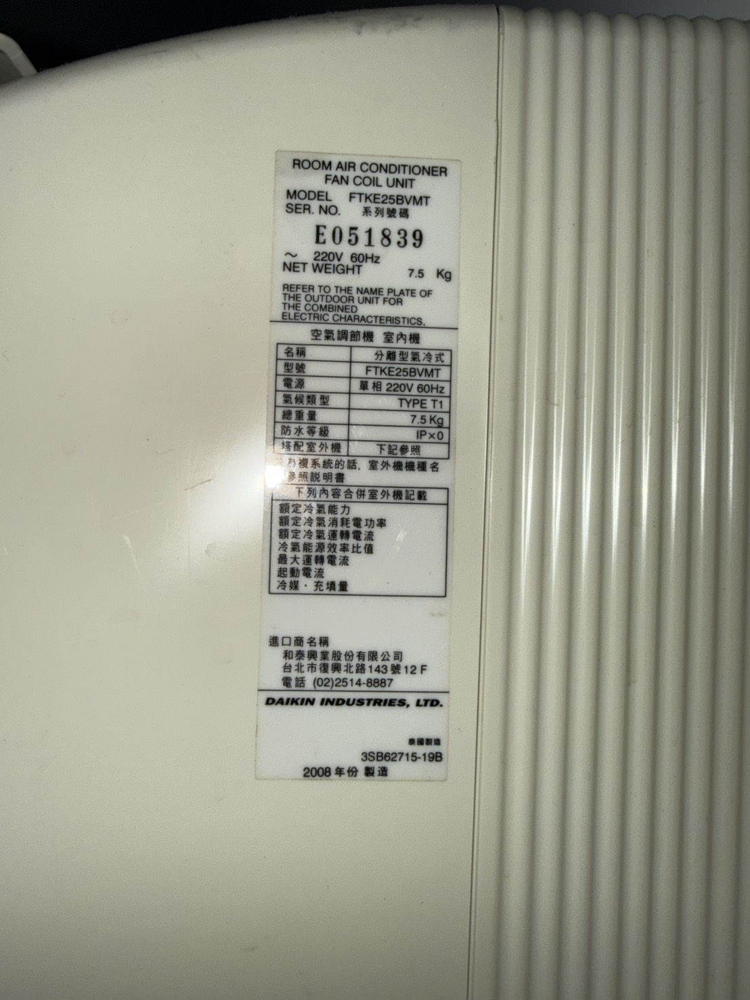
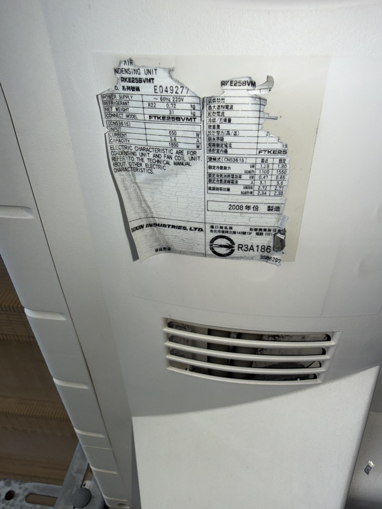
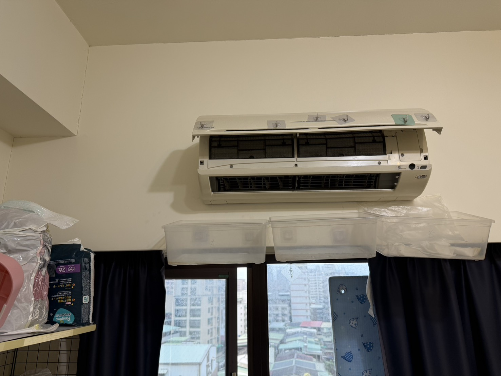
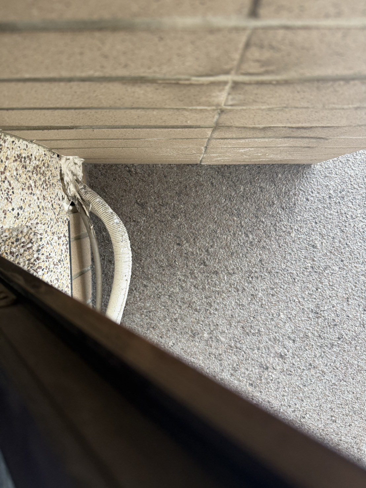
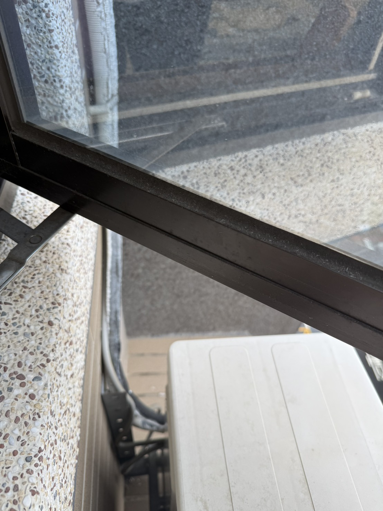
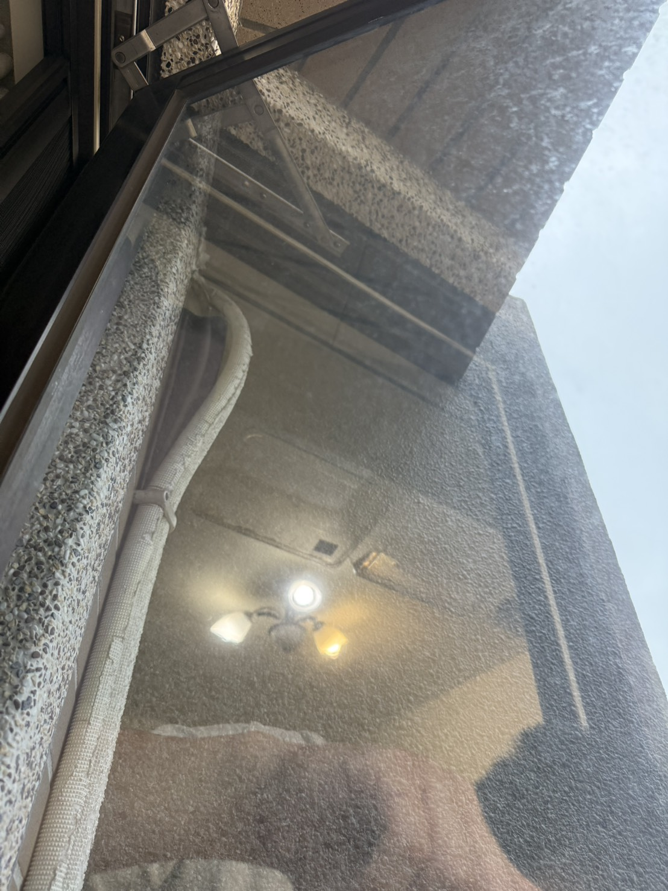
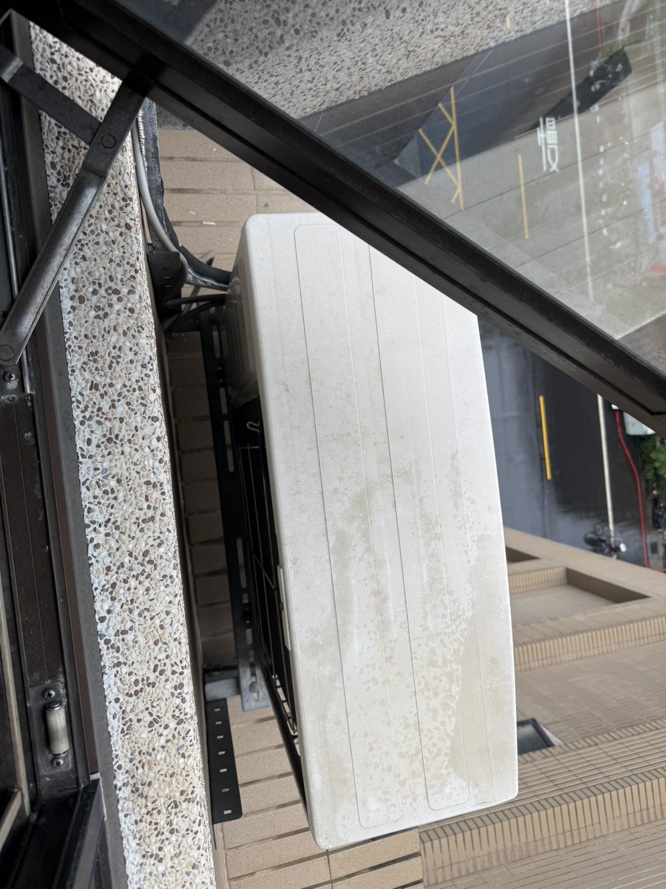
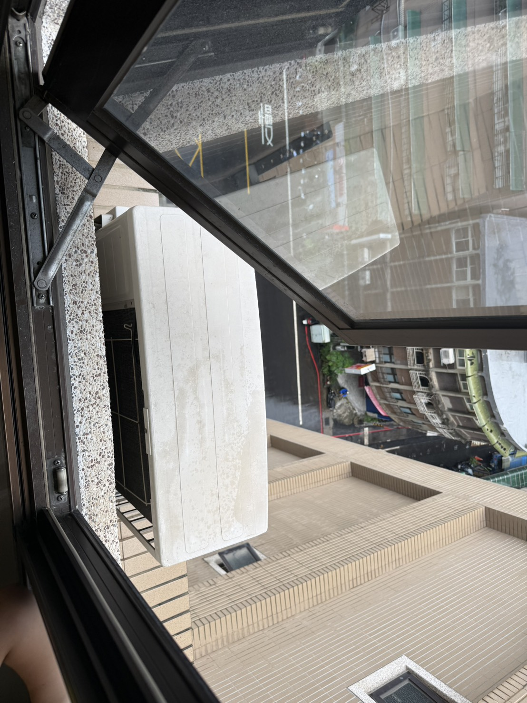
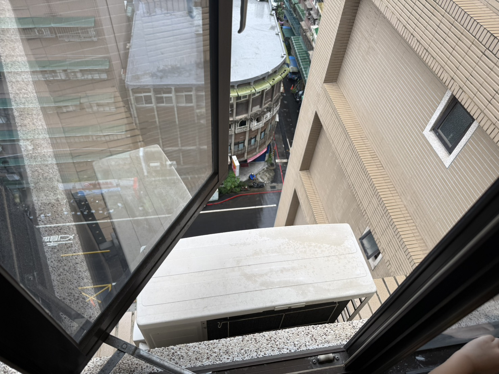

補充資料 · 2026 / 09 / 07
冷氣銘牌與
現場照片
師傅您好，您之前已到現場看過，當時說可以沿用舊管線。今天聯絡時提到舊機冷媒種類還沒確認，所以依我們通話的內容，補上銘牌及更多現場照片給您參考。
這次從室外機銘牌確認：冷媒是 R22，標示充填量為 0.72 kg。
機型與銘牌資料
| 項目 | 資料 |
|---|---|
| 舊室內機 | 大金 FTKE25BVMT |
| 舊室外機 | 大金 RKE25BVMT |
| 舊機冷媒 | R22 |
| 銘牌充填量 | 0.72 kg（720公克） |
| 製造年份 | 2008年 |
| 新購冷氣 | 日立 RAS-36VP／RAC-36VP，3.6 kW，商品標示 R32 |
舊機資料依下方銘牌照片整理；新機資料依購買的商品型號。
現場照片
先放室內、室外機銘牌，其餘為室內安裝位置、窗邊管束及室外環境。點照片可開啟原圖放大查看。

照片 1 / 9
室內機銘牌
FTKE25BVMT，2008年製造。

照片 2 / 9
室外機銘牌
RKE25BVMT；銘牌標示 R22、0.72 kg，搭配室內機 FTKE25BVMT。

照片 3 / 9
室內機全景
室內機與窗戶的相對位置。

照片 4 / 9
窗邊管線出口
現有管束出口與周邊位置。

照片 5 / 9
窗邊管線走向
從另一角度拍攝管束與室外機位置。

照片 6 / 9
管線出口補充角度
窗邊上方管束的補充照片。

照片 7 / 9
室外機近照
室外機頂部與窗戶周邊。

照片 8 / 9
室外機與外牆
室外安裝環境的補充角度。

照片 9 / 9
室外安裝全景
外推窗、室外機及外牆相對位置。